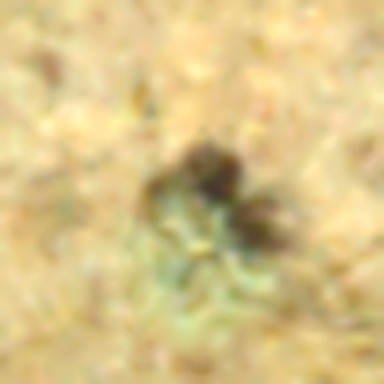
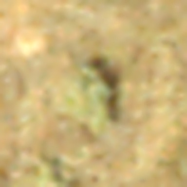
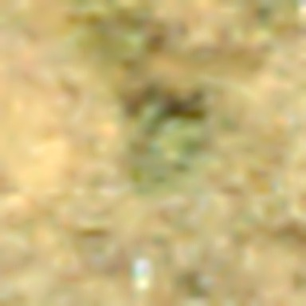

705 km to 1.6 m
One wildfire, seen by a satellite, by a drone, and by a person.
Narrated by an AI voice for now, standing in for mine.
Near the edge of the strip, it detects heat.
Five days of passes, and this is all the satellites saw: spots of heat.
No flames, no smoke. Each square is about 1 km across.
To count fires from space, a computer has to decide which spots belong together.
Using a rule from 2016, it counted 38 different fires.
Each colour is one of them.
But there was only one.
The Soda Fire, almost as big as the city of Los Angeles. Given a little more room, the rule saw one fire too.
Was that luck? I tried it on 1,431 US fires, from 2020 to 2024.
rightfixed by more roomwrong
Each dot is one fire. More room fixed 328 and broke 78.
Will the land come back?
Seven years later, a drone flew over one corner of the burn: the white square. The pale strips are the ground its camera covered.
On one side of the line, the old sagebrush survived. On the other, it burned.
On the burned side, life starts again in young shrubs. In this circle, the drone found 3.
People walked here too, counting on foot.
They found 30.
Across the burn, the drone caught 2 in 3 big shrubs, but 8 in 100 young ones.
Your turn.
Next, you look for the young shrubs yourself.
What you are looking for: young sagebrush, small grey-green tufts on bare ground.



- Point the tablet at a table or the floor. The land appears there; go into the green circle when you are ready.
- Move or lean the tablet until the white ring sits on a young sagebrush, and press Mark.
- When you have marked all you can see, press Check to compare with the field crew and the drone.
your tapsnot a young shrub, by the crew's countyoung shrub the crew founddrone found it
Counts like these help the people who look after this land judge whether it is recovering, and where it needs more help. From the air alone, this land looks like it is barely coming back. With people on the ground, we can see that it is.
The question I'd like to study in the WILDD lab:
If people could step inside the drone's view, in 3D or VR, would they catch what it misses? And would they trust what they see?